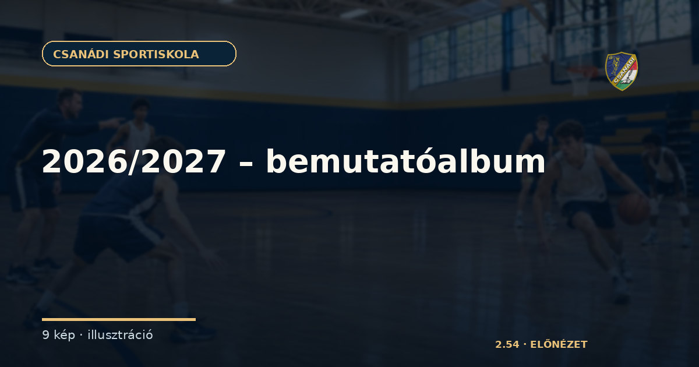

Weboldal- és megosztási előnézet
2026/2027 – bemutatóalbum
2026/2027 – bemutatóalbum: tanévhez rendelt bemutatóképek, nem hitelesített eseményfotók.
Megnyitás a Csanádi honlaponA képalbum tartalma
- Mozgásban a közösség – Illusztráció
- Sportnap hangulata – Illusztráció
- Digitális tanulás – Illusztráció
- Tanulás és tudás – Illusztráció
- Iskolai közösség – Illusztráció
- Közös ünnepek – Illusztráció
- Közösségi szolgálat – Illusztráció
- Diákközösség – Illusztráció
- Az iskola épülete – Illusztráció
A weboldal jelenlegi állapota tesztkiadás, illusztrációkkal és ellenőrzésre váró mintatartalmakkal.